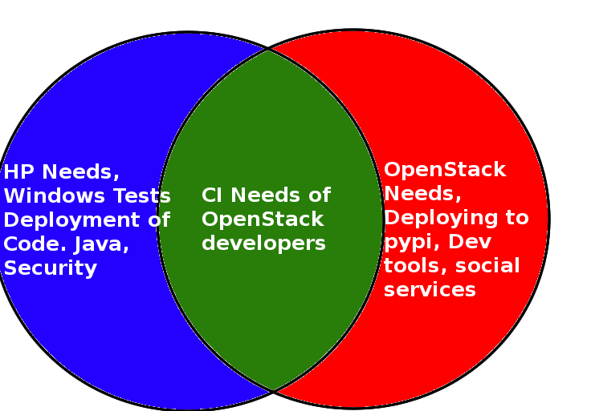

Consuming Open Source Infrastructure
Who am I?
- Work at HP
- Open Source: OpenStack and Puppet
- Build/Run the new ci system inside hp
- Copy of upstream openstack CI
Consuming Open Source Infrastructure
- Not Trivial
- Target Audience
- "what we're doing"
- Takeaways
Define Terms
- Open Source
- Infrastructure
- Consuming
- Upstream
- Downstream
Consuming Open Source Infrastructure
Configuration Management
# Node-OS: trusty
node 'kdc01.openstack.org' {
class { 'openstack_project::kdc':
sysadmins => hiera('sysadmins', []),
}
}
# Node-OS: trusty
node 'kdc02.openstack.org' {
class { 'openstack_project::kdc':
sysadmins => hiera('sysadmins', []),
slave => true,
}
}
Define Terms
- Open Source
- Infrastructure
- Consuming
- Upstream
- Downstream
Examples:
- OpenStack CI Infra
- Mozilla Infra
- Jenkins Infra
- WikiMedia Infra
Takeaway
We benefit from consuming the infrastructure because we don't have to do all the work ourselves.
Takeaway
We benefit from consuming the infrastructure because we don't have to do all the work ourselves.
Takeaway
We benefit from consuming the infrastructure because we have confidence that the architecture is viable.
Takeaway
We benefit from consuming the infrastructure because we don't have to do all the work ourselves.
Any departures you take from upstream is technical debt.
Gozer and the Ghostbusters
- Our project at HP is called gozer
- Our team is called the ghostbusters
- We consume openstack ci's infrastructure
- Puppet
- Ansible
- Git
- OpenStack
What problem are we solving
- Upstream
- CI needs of openstack developers
- Downstream
- CI needs of hp openstack developers
What problem are we solving?
What problem are we solving?
- Upstream
- CI needs of openstack developers
- Publishing of packages to pypi
- Development needs
- Bug tracking
- Voting/arbitration/governance infra
- Social Infra
- Downstream
- CI needs of hp openstack developers
- CI/CD needs of random hp developers
What problem are we solving?

Takeaway
For Downstreams: Identify early which components you wish to replicate.
Takeaway
For Upstreams: Decouple components from each other.
Context Matters
- Upstream uses 2 openstack clouds
- Downstream uses 1 openstack cloud, 2 HP DCs
Getting the network to work
Upstream contribution
- Downstreams must contribute upstream
- Practical
- Social
Upstream contribution
<% if @http_proxy -%>
export http_proxy=<%= @http_proxy %>
export HTTP_PROXY=<%= @http_proxy %>
<% end -%>
<% if @https_proxy -%>
export https_proxy=<%= @https_proxy %>
export HTTPS_PROXY=<%= @https_proxy %>
<% end -%>
<% if @no_proxy -%>
export no_proxy=<%= @no_proxy %>
<% end -%>
Upstream contribution
- Downstreams must contribute upstream
- Practical
- Social
Social Capital
- Get from Upstream
- Testing
- Code
- Reviews
- User Support
- Docs
Social Capital
- Give to Upstream
- Testing
- Code
- Reviews
- User Support
- Docs
- Trust
- Get back from Upstream
- Testing
- Code
- Reviews
- User Support
- Docs
- Trust
Takeaway
Context matters.
Takeaway
Upstream Contribution is not an Option
Takeaway
Upstream Contribution is not an Option
Contribution in Shades
- Successful contribution
- Unsuccessful contribution
State of Puppet
- Upstream had hiera for secrets only
- Puppet 2.7
- site.pp
- Monolithic repository
- Apache module version 0.0.4
- Forked vcsrepo module
- Decent Roles system
- Janky shell script to install packaged modules (wrapped puppet module install)
Puppet Roles
- Module: 'openstack_project'
- Class: 'openstack_project::jenkins'
- Module: 'jenkins'
- Class: 'openstack_project::zuul'
- Module: 'zuul'
What we did
- Deep Copy openstack_project to hp
- Class: 'openstack_project::jenkins' became 'hp::jenkins'
- Module: 'jenkins' added to module path
- Class: 'openstack_project::zuul' became 'hp::zuul'
- Module: 'zuul' added to module path
What we did
- Two git repositories
- One was a new one with 'hp' module in it
- One was a pull of openstack-infra's monolithic repository
- Both 'modules/' directories were added to modulepath
- We can change our role classes in 'hp' and we can pull down upstream whenever
What we actually have done
- Fork every repo we use
- We very rarely sync from upstream
- 1000 commits behind
- Several patches ahead
- Still on 2.7
Takeaway
Find your intermediary between upstream and downstream.
Takeaway
Small syncs, testing. Reflexive of upstream.
What has happend upstream
- Puppet 2.7 -> Puppet 3.7
- Split of data into separate git repo(not hiera)
- Split of monolithic repo into repos per module
- Machinery to release modules to the forge
- Deep copy of puppetlabs-apache to openstackci-httpd
- install_modules.sh got pretty smart
- integration testing against proposed changes to modules
What is planned upstream
- Symver for modules
- Git clone for all module dependencies
- fix vcsrepo
What is planned downstream
- Dogfood the HP OpenStack, run everything on OpenStack
- Upgrade to Puppet 3
- Deploy some testing
- Sync modules individually
Development / Contributing